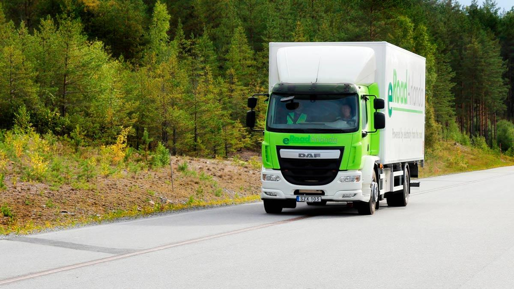

Suecia estrena la carreteras Scalextric para los eléctricos

Aquí la noticia rara de día. O mejor dicho, la noticia que no podía haber ocurrido en otro lugar del mundo: Suecia ha creado una carretera que carga los coches eléctricos según avanzan.
La idea es como la del Scalextric (los puristas lo llaman slot, pero nosotros no llegamos a tanto), ese gran juego que nos ha quitado horas de hacer cosas más productivas.
Como parte de uno de los objetivos del país, que no es otro que el de tener un parque automovilístico que no genere emisiones de combustibles fósiles en 2030, se ha creado la eRoadArlanda, que permite tanto a los vehículos de mercancías como a los de pasajeros ir recargando mientras avanzan por ella. Teniendo en cuenta que los primeros camiones eléctricos de Volvo están de camino, no parece un movimiento de cara a la gelería...
La carretera eléctrica funciona transfiriendo energía desde un pequeño raíl en la carretera hasta el vehículo, que tiene que ir conectado por medio de un brazo ajustable. El brazo detecta automáticamente la hendidura automáticamente y se introduce en ella.
En Suecia suele llover y nevar bastante, pero eso no ha supuesto un problema, ya que se ha diseñado teniendo en cuenta ese tipo de inconvenientes.
Así funciona la carretera eléctrica de Suecia
Además, parece que se ha desarrollado un potente sistema de drenaje para que el carril no se inunde. En cuanto a la posible suciedad o gravilla que se puede meter el brazo está estudiado para sacarla mientras circula. Por otro lado, el hueco es tan estrecho que aseguran que no supone ningún problema para motos o bicis...
Por el momento, la carretera, que une Estocolmo con la ciudad de Arlanda, tiene 2 km de largo y la van a probar autobuses y camiones, que si funciona este sistema podrán ahorrar en baterías (peso y tamaño), aunque la idea es que pase a servir para coches particulares, auqnue estos sean coches híbridos de los del tipo enchufable.
Además, de ser positivo este test, está prevista una red de 20.000 km que los suecos tendrán que pagar a unos 900.000 euros el kilómetro…
19 Abr 2018 23:00